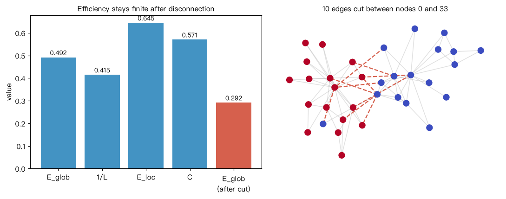

Example04 / 15
全局效率与局部效率
全局效率 E_glob = 平均 1/d_ij（不连通点对贡献 0），局部效率 E_loc(i) = 节点 i 的邻居子图（去掉 i）的全局效率。 先在空手道网络上手工实现两者并与 nx.global_efficiency / nx.local_efficiency 核对； 再把网络拆成不连通的两半，说明此时平均路径长度无定义而全局效率仍可计算。 输出：手工值与 NetworkX 一致；E_glob 约 0.49（与 1/L≈0.42 同量级但不相等），E_loc 约 0.65， 平均聚集系数约 0.57； 删掉若干边使网络断开后，nx.average_shortest_path_length 报错，而全局效率下降但仍有限。
Output输出图

Output文字输出
E_glob: 手工 0.4920, NetworkX 0.4920 E_loc : 手工 0.6451, NetworkX 0.6451 平均聚集系数 C = 0.5706；1/L = 0.4152 切边后连通分支数 = 2 平均路径长度：报错 -> Graph is not connected. 切边后全局效率 = 0.2919
Code代码
# 全局效率 E_glob = 平均 1/d_ij（不连通点对贡献 0），局部效率 E_loc(i) = 节点 i 的邻居子图（去掉 i）的全局效率。
# 先在空手道网络上手工实现两者并与 nx.global_efficiency / nx.local_efficiency 核对；
# 再把网络拆成不连通的两半，说明此时平均路径长度无定义而全局效率仍可计算。
# 输出：手工值与 NetworkX 一致；E_glob 约 0.49（与 1/L≈0.42 同量级但不相等），E_loc 约 0.65，
# 平均聚集系数约 0.57；
# 删掉若干边使网络断开后，nx.average_shortest_path_length 报错，而全局效率下降但仍有限。
import networkx as nx
import numpy as np
G = nx.karate_club_graph()
def global_eff(H):
n = H.number_of_nodes()
if n < 2:
return 0.0
tot = 0.0
for s, dist in nx.all_pairs_shortest_path_length(H):
tot += sum(1.0 / d for t, d in dist.items() if t != s)
return tot / (n * (n - 1))
def local_eff(H):
return np.mean([global_eff(H.subgraph(list(H.neighbors(i)))) for i in H])
print("E_glob: 手工 %.4f, NetworkX %.4f" % (global_eff(G), nx.global_efficiency(G)))
print("E_loc : 手工 %.4f, NetworkX %.4f" % (local_eff(G), nx.local_efficiency(G)))
print("平均聚集系数 C = %.4f；1/L = %.4f" % (nx.average_clustering(G), 1 / nx.average_shortest_path_length(G)))
H = G.copy()
H.remove_edges_from(nx.minimum_edge_cut(H, 0, 33)) # 切断两位核心人物之间的所有路径
print("切边后连通分支数 =", nx.number_connected_components(H))
try:
nx.average_shortest_path_length(H)
except nx.NetworkXError as e:
print("平均路径长度：报错 ->", e)
print("切边后全局效率 = %.4f" % nx.global_efficiency(H))
# 作图：左为各指标对比，右为切边后的网络（红色虚线 = 被删除的边，节点按连通分支着色）
import matplotlib.pyplot as plt
fig, (ax1, ax2) = plt.subplots(1, 2, figsize=(10, 4))
vals = {"E_glob": nx.global_efficiency(G), "1/L": 1 / nx.average_shortest_path_length(G),
"E_loc": nx.local_efficiency(G), "C": nx.average_clustering(G), "E_glob\n(after cut)": nx.global_efficiency(H)}
ax1.bar(list(vals), list(vals.values()), color=["#4393c3"] * 4 + ["#d6604d"])
for i, v in enumerate(vals.values()):
ax1.text(i, v + 0.01, "%.3f" % v, ha="center", fontsize=9)
ax1.set_ylabel("value"); ax1.set_title("Efficiency stays finite after disconnection", fontsize=10)
pos = nx.spring_layout(G, seed=4)
comp = {v: i for i, cc in enumerate(nx.connected_components(H)) for v in cc}
cut = [e for e in G.edges() if not H.has_edge(*e)]
nx.draw_networkx_edges(H, pos, ax=ax2, edge_color="0.7", alpha=0.4)
nx.draw_networkx_edges(G, pos, ax=ax2, edgelist=cut, edge_color="#d6604d", style="--", width=1.5)
nx.draw_networkx_nodes(H, pos, ax=ax2, node_size=70, node_color=[comp[v] for v in H], cmap="coolwarm")
ax2.set_title("%d edges cut between nodes 0 and 33" % len(cut), fontsize=10); ax2.axis("off")
plt.tight_layout(); plt.show()Run在浏览器中运行
首次加载 Python 环境约需 20–40 秒；可以修改参数后重新运行。